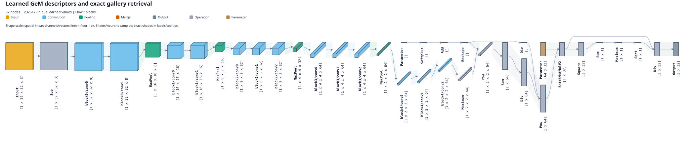
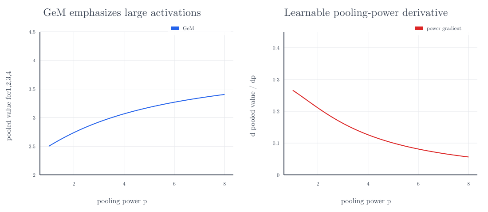
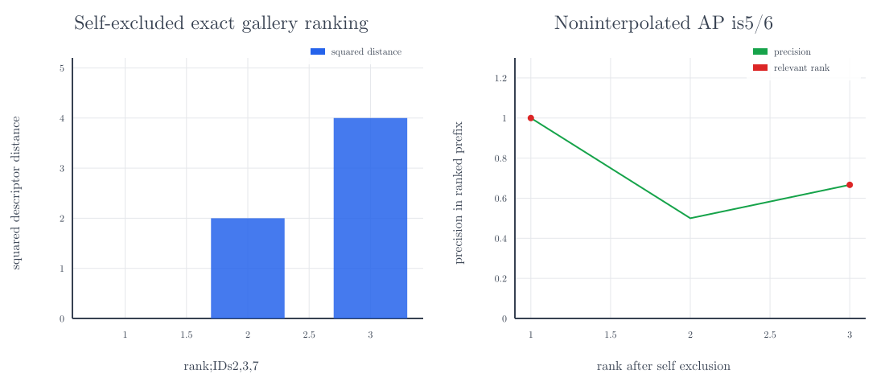
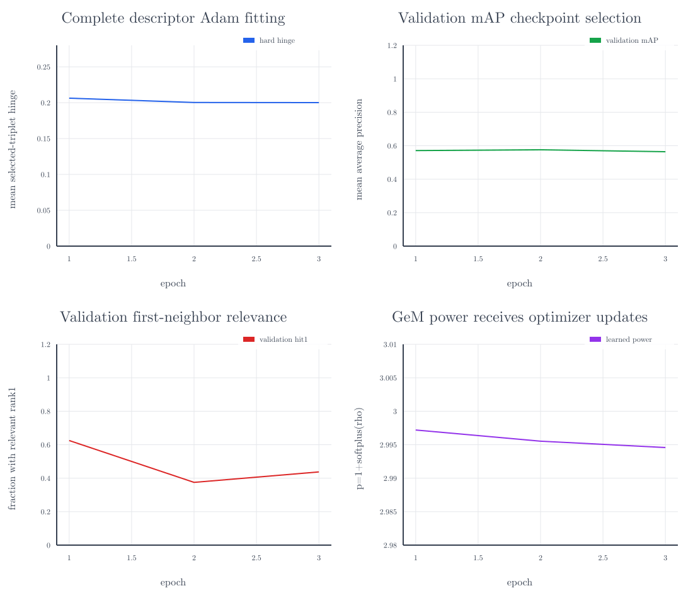
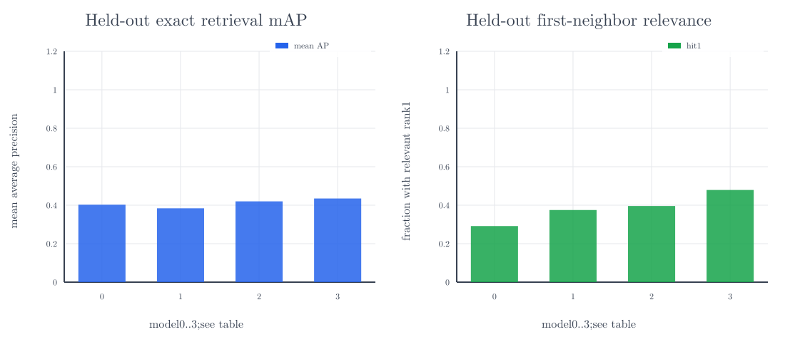
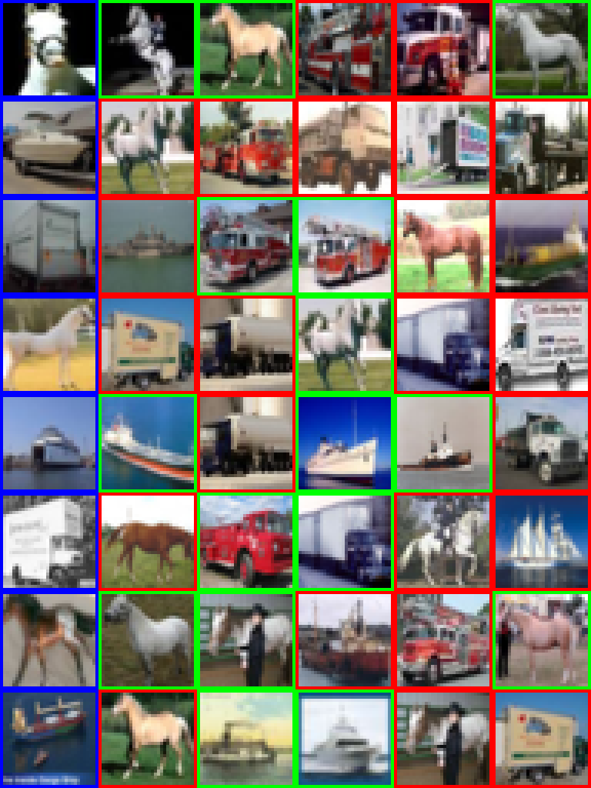

Learned GeM descriptors and exact gallery retrieval
Abstract
Generalized-mean pooling learns how much to emphasize large feature activations. Hand derivatives and exact AP/ranking fixtures precede full descriptor checks,actual class-disjoint CIFAR images and visible hard-triplet Adam. Restored immutable deployment and every serialized gallery ranking are verified before showing actual nearest neighbors.
Source example: examples/cpp/source/nn/1_convolutional_neural_networks/1.8_other_vision_tasks/image_retrieval.cpp.
The method
Encode observed RGB into unit descriptors with a learned GeM power,select hard triplets from frozen current embeddings,and recompute their hinge gradient for explicit Adam. Select checkpoints by exact validation mAP and compare held-out semantic retrieval with untrained and fixed pixel descriptors.
The concept diagram below is drawn by dm::graphics::Diagram. Its editable C++
source is the complete block below; regeneration uses the same datamunge toolchain
as the numerical examples. Exports consume the saved local SVG.
#include <dm/dm.hpp>
int main() {
std::filesystem::create_directories("build");
dm::graphics::Diagram diagram;
diagram.node("n0", {0.0, 0}, "RGB features\nLearn GeM power");
diagram.node("n1", {5.2, 0}, "Hard triplets\nVisible Adam");
diagram.node("n2", {10.4, 0}, "Ranked neighbors\nInspect images");
diagram.edge("n0", "n1").edge("n1", "n2");
diagram.save_svg("build/image_retrieval_concept.svg");
}Executed tensor architecture
This figure executes the inference configuration shown in the code, using a zero-valued shape probe without fitting or loading a checkpoint. Named stage boundaries group whole subgraphs where available; other nodes retain functional-layer detail. Exact batch-inclusive shapes and reachable parameter totals come from the trace. Shared linear scales map spatial dimensions and channel counts to blocks; the one-pixel visibility floor is disclosed in the legend. Labels use compact monospace text, rotate counterclockwise and sit beside their own glyphs. Arrows flow left to right; wide diagrams scroll at native size on the website.
#include <dm/dm.hpp>
int main() {
namespace n = dm::nn;
namespace m = n::models;
n::set_num_threads(2);
std::filesystem::create_directories("build");
n::ParameterStore p(227);
n::Module architecture_model(
[&](const n::Tensor& image) { return m::RetrievalEncoder(p, image, 8, 32).descriptor; },
"Learned GeM descriptors and exact gallery retrieval");
n::ModelPlotOptions options;
options.style = n::ModelPlotStyle::Flow;
options.detail = n::ModelPlotDetail::Blocks;
options.labels = {.type = n::ModelPlotLabel::NameAndShape, .size = 12, .wrap = 24};
options.spacing = {.layer = 24, .lane = 12, .label = 8, .margin = 20};
options.sizing.spatial_size = 96;
options.sizing.channel_size = 42;
options.sizing.minimum_extent = 1;
options.opacity = .8;
const auto diagram = architecture_model.plot(n::zeros({1, 32, 32, 3}), options);
diagram.save_svg("build/image_retrieval_architecture.svg");
std::print(
"{} displayed nodes; {} reachable learned values.\n",
diagram.nodes().size(),
diagram.parameter_count());
}37 displayed nodes; 232617 reachable learned values.

A learned pooling power changes which activations matter
For positive-clamped activations x_s in one feature channel,GeM computes \(g=A^{1/p}\),where \(A=S^{-1}\sum_s x_s^p\). It includes mean pooling at p=1 and increasingly emphasizes large activations as p grows. Its derivatives on the unclamped branch are
The input clamp is epsilon1e-6. Values below it have zero activation gradient. The encoder learns one shared scalar p=1+softplus(rho),initialized at3. The native independent oracle verifies every activation derivative and the exponent derivative,including signed/clamped inputs,and separately checks signed/zero unit-normalization Jacobians. The sweep below uses the hand-checkable values 1,2,3,4;the sweep itself performs no fitting.
#include <dm/dm.hpp>
int main() {
namespace n = dm::nn;
const auto x = n::tensor({1., 2., 3., 4.}, {1, 2, 2, 1}), powers = n::linspace(1, 8, 101);
std::vector<double> values, derivatives;
for (std::int64_t i = 0; i < powers.numel(); ++i) {
auto p = n::select(powers, 0, i).clone().requires_grad_();
const auto pooled = n::models::GeneralizedMean(x, p);
values.push_back(pooled.item());
derivatives.push_back(n::grad(n::sum(pooled), {p})[0].item());
}
if (std::abs(values.front() - 2.5) > 1e-7)
return 1;
auto a = dm::graphics::RPlot::create(), b = dm::graphics::RPlot::create();
a.lines(powers.to_vector<double>(), values, "GeM", {37, 99, 235})
.title("GeM emphasizes large activations")
.x_label("pooling power p")
.y_label("pooled value for1,2,3,4")
.y_limits(2., 4.5);
b.lines(powers.to_vector<double>(), derivatives, "power gradient", {220, 38, 38})
.title("Learnable pooling-power derivative")
.x_label("pooling power p")
.y_label("d pooled value / dp")
.y_limits(0, .45);
std::filesystem::create_directories("build");
auto layout = dm::graphics::RLayout::create(1, 2);
layout.add(a).add(b).size(1100, 480).fit_panels().save_svg("build/image_retrieval_gem.svg");
std::print(
"p1 gives mean2.5;p8 gives {:.6f};all power derivatives positive for this nonconstant "
"input. Native independent analytic GeM input/p and norm-floor Jacobians pass.\n",
values.back());
}p1 gives mean2.5;p8 gives 3.405456;all power derivatives positive for this nonconstant input. Native independent analytic GeM input/p and norm-floor Jacobians pass.

Exact ranking,self exclusion and average precision
The index copies finite descriptors and computes squared differences in Float64. It excludes a gallery item with the query’s source ID,then sorts ascending distance,breaking exact ties by integer source ID. Identical,orthogonal and opposite unit vectors have squared distances0,2,4. These exact small values make ranking and self exclusion easy to audit.
For a query with R relevant eligible gallery items,noninterpolated average precision is \(AP=R^{-1}\sum_{k:\,relevant(k)} P@k\). Relevant items at ranks1 and3 give \((1+2/3)/2=5/6\). Queries with no relevant gallery items after self exclusion are counted separately and excluded from mean AP/hit rates. Rank one and rank five hits ask whether any relevant item appears in that prefix.
Integer IDs remain integer throughout sorting and export. The native large-ID
regression uncovered and fixed a core Tensor::to_vector/item double
intermediate:IDs beyond2^53 now retain all bits,including strided views and
signed64-bit limits. The complete35-test tensor value suite passes.
#include <dm/dm.hpp>
int main() {
namespace n = dm::nn;
namespace m = n::models;
const auto gallery = n::tensor({1., 0., 0., 1., -1., 0., 1., 0.}, {4, 2}),
queries = n::tensor({1., 0., 1., 0.}, {2, 2});
m::TensorDescriptorIndex index(gallery, {9, 3, 7, 2});
const auto ranking = index.Rank(queries, 0, 9);
const auto metrics = m::ScoreTensorRetrieval(queries, {1, 99}, {9, 90}, index, {1, 0, 1, 1});
if (std::abs(metrics.map.item() - 5. / 6) > 1e-12 || metrics.eligible.item<int>() != 1 ||
metrics.without_positive.item<int>() != 1)
return 1;
const auto ids = ranking.ids.to_vector<std::int64_t>();
const auto distance = ranking.distances.to_vector<double>();
std::print("| rank | source ID | squared distance | relevant |\n|---:|---:|---:|---:|\n");
for (int i = 0; i < 3; ++i)
std::print("| {} | {} | {:.0f} | {} |\n", i + 1, ids[i], distance[i], i != 1);
const std::int64_t odd = 9007199254740993LL;
m::TensorDescriptorIndex large(n::ones({2, 2}), {odd + 1, odd});
const auto exact = large.Rank(n::ones({1, 2}), 0).ids.to_vector<std::int64_t>();
if (exact[0] != odd || exact[1] != odd + 1)
return 1;
std::print("Self ID9 excluded;AP5/6,eligible1,no-positive1. Exact large tied IDs {}/{} "
"survive tensor export.\n",
exact[0], exact[1]);
auto a = dm::graphics::RPlot::create(), b = dm::graphics::RPlot::create();
a.bars({1, 2, 3}, distance, "squared distance", {37, 99, 235}, .6)
.title("Self-excluded exact gallery ranking")
.x_label("rank;IDs2,3,7")
.y_label("squared descriptor distance")
.y_limits(0, 5.2);
b.lines({1, 2, 3}, {1, .5, 2. / 3}, "precision", {22, 163, 74})
.points({1, 3}, {1, 2. / 3}, "relevant rank", {220, 38, 38})
.title("Noninterpolated AP is5/6")
.x_label("rank after self exclusion")
.y_label("precision in ranked prefix")
.y_limits(0, 1.3);
std::filesystem::create_directories("build");
auto layout = dm::graphics::RLayout::create(1, 2);
layout.add(a).add(b).size(1100, 480).fit_panels().save_svg(
"build/image_retrieval_ranking.svg");
}| rank | source ID | squared distance | relevant |
|---|---|---|---|
| 1 | 2 | 0 | true |
| 2 | 3 | 2 | false |
| 3 | 7 | 4 | true |
Self ID9 excluded;AP5/6,eligible1,no-positive1. Exact large tied IDs 9007199254740993/9007199254740994 survive tensor export.

Full and compact descriptor encoders execute
The encoder subtracts.5 from observed RGB and uses13 biased He-normal SAME ReLU convolutions,four2x2/stride2 VALID pools,learned GeM,a bias-free normal projection,and unit normalization with squared-norm floor1e-12. There is no pretrained model,whitening,augmentation,BN or dropout. Full widths produce 128D descriptors with14,780,225 scalars/28 leaves. Compact widths divided by8 produce32D descriptors with232,617 scalars/28 leaves. Both retain19 recorded stages. The learned rho and projection are warmed before optimizer creation.
#include <dm/dm.hpp>
int main() {
namespace n = dm::nn;
n::set_num_threads(2);
for (int divisor : {1, 8}) {
const int dimensions = divisor == 1 ? 128 : 32;
n::ParameterStore p(227);
auto rgb = (.5 + .4 * n::sin(n::arange(0, 2 * 3072).reshape({2, 32, 32, 3}) * .17))
.requires_grad_();
const auto net = n::models::RetrievalEncoder(p, rgb, divisor, dimensions);
auto variables = p.parameters();
variables.push_back(rgb);
const auto weights = n::sin(n::arange(0, 2 * dimensions).reshape({2, dimensions}) * .13);
const auto gradient = n::grad(n::sum(net.descriptor * weights), variables);
if (p.count() != (divisor == 1 ? 14780225 : 232617) || p.size() != 28 ||
net.stages.size() != 19 || gradient.size() != 29)
return 1;
for (const auto &g : gradient)
if (!g.defined() || !std::isfinite(n::norm(g).item()) ||
(divisor == 8 && n::norm(g).item() <= 0))
return 1;
std::print("{}:{} learned scalars,28 finite parameter gradients plus RGB;19 stages,{}D "
"descriptors,initial p {:.6f}. No fitting.\n",
divisor == 1 ? "Full" : "Compact", p.count(), dimensions, net.exponent.item());
}
}Full:14780225 learned scalars,28 finite parameter gradients plus RGB;19 stages,128D descriptors,initial p 3.000000. No fitting. Compact:232617 learned scalars,28 finite parameter gradients plus RGB;19 stages,32D descriptors,initial p 3.000000. No fitting.
Actual CIFAR pools,disjoint classes and disjoint source images
Original CIFAR-10 binary records supply raw byte ingress. Only selected image rows are converted:planar bytes enter an integer tensor before channel transposition,Float32 conversion and division by255. A native independent source-style loader verifies *every selected pixel,label and ID* exactly. All row/category choices are metadata;std::mt19937(211) preserves the source bucket-shuffle order within the same C++ standard library.
| Pool | Images | Original CIFAR categories | Images per category |
|---|---|---|---|
| Fitting | 160 | 0–4 | 32 |
| Validation queries/gallery | 16/32 | 5–6 | 8/16 |
| Test queries/gallery | 48/96 | 7–9 | 16/32 |
Every source ID is unique across all five pools. Official test IDs receive an offset100000;development IDs retain their original row numbers. Relevance is *same semantic category*,not a photograph of the same particular object. This labelled CIFAR adaptation differs from the paper’s unlabelled3D-model mining and particular-object benchmarks. The preview shows actual fitting photographs,two per category0–4.
#include <dm/dm.hpp>
int main() {
namespace n = dm::nn;
std::filesystem::path cache;
if (const auto *p = std::getenv("DATAMUNGE_DATA_DIR"))
cache = p;
else if (const auto *p = std::getenv("XDG_CACHE_HOME"))
cache = std::filesystem::path(p) / "datamunge/datasets";
else
cache = std::filesystem::path(std::getenv("HOME")) / ".cache/datamunge/datasets";
dm::datasets::fetch("cifar10", (cache / "cifar10").string());
const auto data = n::models::LoadTensorRetrievalData(cache / "cifar10");
const auto sample =
n::models::TensorRetrievalRows(data.fit, {0, 1, 32, 33, 64, 65, 96, 97, 128, 129});
std::filesystem::create_directories("build");
n::save_image_grid(sample.images, "build/image_retrieval_data.png", 2, 0, 1, 3, 1, 5);
std::print("Actual fitting categories0airplane,1automobile,2bird,3cat,4deer:two images "
"each. Validation5dog/6frog;test7horse/8ship/9truck. All352 selected source IDs "
"are disjoint;every pixel/label/ID matches the independent source loader.\n");
}Actual fitting categories0airplane,1automobile,2bird,3cat,4deer:two images each. Validation5dog/6frog;test7horse/8ship/9truck. All352 selected source IDs are disjoint;every pixel/label/ID matches the independent source loader.
Explicit hard mining,recomputation and Adam
The complete compact encoder fits24 visible Adam(.0005) updates:three epochs of eight20-image batches,each containing four distinct images from each fitting category. Every fitting source appears once per epoch. Frozen current descriptors select the farthest distinct same-class positive and nearest different-class negative per anchor. Ties choose the first row. The loss is the mean squared-L2 triplet hinge with margin.2;there is no hidden regularization or fallback. A fresh differentiable encoder pass follows discrete mining before every update.
Maximum exact validation mAP selects the checkpoint. Restoring must reproduce its rankings-based score before held-out scoring. Independent deployment uses only observed RGB and restored parameters;cloned snapshots verify every learned leaf remains immutable. Saved gallery descriptors/IDs are reloaded,and every one of48x96 ranked IDs and squared distances must reproduce exactly.
Pooled8x8 RGB and whole-image mean RGB are fixed descriptive transforms,with no fitted coefficients or optimizer. They join the untrained encoder as simple references. Actual held-out query/neighbor images show semantic relevance errors.
#include <dm/dm.hpp>
int main() {
namespace n = dm::nn;
namespace m = n::models;
n::set_num_threads(2);
std::filesystem::path cache;
if (const auto *p = std::getenv("DATAMUNGE_DATA_DIR"))
cache = p;
else if (const auto *p = std::getenv("XDG_CACHE_HOME"))
cache = std::filesystem::path(p) / "datamunge/datasets";
else
cache = std::filesystem::path(std::getenv("HOME")) / ".cache/datamunge/datasets";
dm::datasets::fetch("cifar10", (cache / "cifar10").string());
const auto data = m::LoadTensorRetrievalData(cache / "cifar10");
n::ParameterStore p(227);
// Warm all28 leaves,including the scalar GeM rho and bias-free projection.
{
n::NoGradGuard guard;
m::RetrievalEncoder(p, n::zeros({1, 32, 32, 3}), 8, 32);
}
const auto encode = [](n::ParameterStore &weights, const m::TensorRetrievalPool &pool) {
n::NoGradGuard guard;
std::vector<n::Tensor> parts;
for (std::int64_t row = 0; row < std::int64_t(pool.size()); row += 20)
parts.push_back(
m::RetrievalEncoder(weights,
n::slice_axis(pool.images, 0, row,
std::min(row + 20, std::int64_t(pool.size()))),
8, 32)
.descriptor);
return n::concat(parts, 0);
};
const auto score = [](const n::Tensor &queries, const m::TensorRetrievalPool &query,
const n::Tensor &gallery, const m::TensorRetrievalPool &pool) {
const m::TensorDescriptorIndex index(gallery, pool.ids);
return m::ScoreTensorRetrieval(queries, query.labels, query.ids, index, pool.labels);
};
const auto probe = m::TensorRetrievalRows(data.fit, m::RetrievalBatches(data.fit, 0)[0]);
n::Tensor frozen;
{
n::NoGradGuard guard;
frozen = m::RetrievalEncoder(p, probe.images, 8, 32).descriptor;
}
const auto fixed = m::RetrievalHardTriplets(frozen, probe.labels);
double initial;
{
n::NoGradGuard guard;
initial =
m::MeanTriplet(m::RetrievalEncoder(p, probe.images, 8, 32).descriptor, fixed).item();
}
const auto untrained_query = encode(p, data.test_query),
untrained_gallery = encode(p, data.test_gallery);
n::OptimizerConfig config;
config.kind = n::OptimizerKind::Adam;
n::Optimizer adam(p, .0005, config);
std::filesystem::create_directories("build");
std::filesystem::create_directories("figures");
std::vector<double> epochs, losses, maps, hits, powers;
double best = -1;
int selected = 0, steps = 0;
std::print("| epoch | mean batch-hard hinge | validation mAP | validation hit1 | learned p "
"|\n|---:|---:|---:|---:|---:|\n");
for (int epoch = 1; epoch <= 3; ++epoch) {
double total = 0;
std::set<std::int64_t> seen;
for (const auto &rows : m::RetrievalBatches(data.fit, epoch)) {
const auto batch = m::TensorRetrievalRows(data.fit, rows);
for (const auto id : batch.ids)
if (!seen.insert(id).second)
return 1;
n::Tensor current;
{
n::NoGradGuard guard;
current = m::RetrievalEncoder(p, batch.images, 8, 32).descriptor;
}
const auto triplets = m::RetrievalHardTriplets(current, batch.labels);
// Recompute a differentiable current encoder after frozen discrete hard mining.
const auto features = m::RetrievalEncoder(p, batch.images, 8, 32).descriptor;
const auto loss = m::MeanTriplet(features, triplets, .2f);
if (!std::isfinite(loss.item()))
return 1;
total += loss.item() / 8.;
adam.minimize(loss);
++steps;
}
if (seen.size() != 160)
return 1;
const auto metric = score(encode(p, data.validation_query), data.validation_query,
encode(p, data.validation_gallery), data.validation_gallery);
double power;
{
n::NoGradGuard guard;
power = m::RetrievalEncoder(p, n::slice_axis(data.fit.images, 0, 0, 1), 8, 32)
.exponent.item();
}
epochs.push_back(epoch);
losses.push_back(total);
maps.push_back(metric.map.item());
hits.push_back(metric.hit1.item());
powers.push_back(power);
if (metric.map.item() > best) {
best = metric.map.item();
selected = epoch;
p.save("build/image_retrieval_best.npz");
}
std::print("| {} | {:.6f} | {:.6f} | {:.6f} | {:.6f} |\n", epoch, total, maps.back(),
hits.back(), power);
}
p.load("build/image_retrieval_best.npz");
const auto restored = score(encode(p, data.validation_query), data.validation_query,
encode(p, data.validation_gallery), data.validation_gallery);
if (std::abs(restored.map.item() - best) > 1e-12)
return 1;
double learned;
{
n::NoGradGuard guard;
learned =
m::MeanTriplet(m::RetrievalEncoder(p, probe.images, 8, 32).descriptor, fixed).item();
}
// Independently allocated RGB-only deployment:no labels or optimizer are created.
n::ParameterStore deployed(991);
{
n::NoGradGuard guard;
m::RetrievalEncoder(deployed, n::zeros({1, 32, 32, 3}), 8, 32);
}
deployed.load("build/image_retrieval_best.npz");
std::vector<n::Tensor> snapshot;
for (const auto &value : deployed.parameters())
snapshot.push_back(value.clone());
const auto queries = encode(deployed, data.test_query),
gallery = encode(deployed, data.test_gallery),
reference = encode(p, data.test_query),
repeat = encode(deployed, data.test_query);
const double parity = n::max(n::abs(queries - reference)).item();
if (parity > 1e-7 || n::max(n::abs(queries - repeat)).item() != 0)
return 1;
{
n::NoGradGuard guard;
const auto one = m::RetrievalEncoder(
deployed, m::TensorRetrievalRows(data.test_query, {3}).images, 8, 32)
.descriptor;
if (n::max(n::abs(one - n::slice_axis(queries, 0, 3, 4))).item() > 2e-6)
return 1;
}
for (std::size_t i = 0; i < snapshot.size(); ++i)
if (n::max(n::abs(snapshot[i] - deployed.parameters()[i])).item() != 0)
return 1;
const m::TensorDescriptorIndex index(gallery, data.test_gallery.ids);
n::save_npz(
"build/image_retrieval_gallery.npz",
{{"descriptors", gallery}, {"source_ids", n::from_vector(data.test_gallery.ids)}});
n::Tensor saved_features, saved_ids;
for (const auto &[name, value] : n::load_npz("build/image_retrieval_gallery.npz")) {
if (name == "descriptors")
saved_features = value;
if (name == "source_ids")
saved_ids = value;
}
const m::TensorDescriptorIndex reloaded(saved_features, saved_ids.to_vector<std::int64_t>());
for (std::int64_t row = 0; row < 48; ++row) {
const auto a = index.Rank(queries, row, data.test_query.ids[row]),
b = reloaded.Rank(queries, row, data.test_query.ids[row]);
if (!n::all(n::equal(a.ids, b.ids)).item<bool>() ||
n::max(n::abs(a.distances - b.distances)).item() != 0)
return 1;
}
const auto learned_score = score(queries, data.test_query, gallery, data.test_gallery),
untrained =
score(untrained_query, data.test_query, untrained_gallery, data.test_gallery),
pixels =
score(m::RetrievalPixelDescriptors(data.test_query, 4), data.test_query,
m::RetrievalPixelDescriptors(data.test_gallery, 4), data.test_gallery),
colour =
score(m::RetrievalPixelDescriptors(data.test_query, 32), data.test_query,
m::RetrievalPixelDescriptors(data.test_gallery, 32), data.test_gallery);
std::print("{} explicit Adam updates;selected epoch{},restored validation mAP {:.6f};fixed "
"fitting hinge {:.6f}->{:.6f}. Independent deployment parity {:.3g},all28 leaves "
"immutable,repeat/single/batch checks pass. All48x96 serialized gallery "
"rankings/distances reproduce exactly.\n| model | test mAP | hit1 | hit5 | "
"eligible | no positive |\n|---|---:|---:|---:|---:|---:|\n",
steps, selected, best, initial, learned, parity);
const auto print = [](const char *name, const m::TensorRetrievalMetrics &value) {
std::print("| {} | {:.6f} | {:.6f} | {:.6f} | {} | {} |\n", name, value.map.item(),
value.hit1.item(), value.hit5.item(), value.eligible.item<std::int64_t>(),
value.without_positive.item<std::int64_t>());
};
print("learned CNN", learned_score);
print("untrained CNN", untrained);
print("8x8 pooled RGB", pixels);
print("mean RGB", colour);
n::save_image_grid(
m::RetrievalPreviewTiles(data.test_query, data.test_gallery, queries, index),
"build/image_retrieval_neighbors.png", 1, 0, 1, 0, 0, 2);
std::filesystem::copy_file("build/image_retrieval_neighbors.png",
"figures/image_retrieval_neighbors.png",
std::filesystem::copy_options::overwrite_existing);
std::vector<double> map_values, hit_values;
for (const auto *value : {&learned_score, &untrained, &pixels, &colour}) {
map_values.push_back(value->map.item());
hit_values.push_back(value->hit1.item());
}
auto a = dm::graphics::RPlot::create(), b = dm::graphics::RPlot::create();
a.bars({0, 1, 2, 3}, map_values, "mean AP", {37, 99, 235}, .6)
.title("Held-out exact retrieval mAP")
.x_label("model0..3;see table")
.y_label("mean average precision")
.y_limits(0, 1.2);
b.bars({0, 1, 2, 3}, hit_values, "hit1", {22, 163, 74}, .6)
.title("Held-out first-neighbor relevance")
.x_label("model0..3;see table")
.y_label("fraction with relevant rank1")
.y_limits(0, 1.2);
auto baselines = dm::graphics::RLayout::create(1, 2);
baselines.add(a).add(b).size(1100, 480).fit_panels().save_svg(
"build/image_retrieval_baselines.svg");
std::filesystem::copy_file("build/image_retrieval_baselines.svg",
"figures/image_retrieval_baselines.svg",
std::filesystem::copy_options::overwrite_existing);
auto loss_plot = dm::graphics::RPlot::create(), map_plot = dm::graphics::RPlot::create(),
hit_plot = dm::graphics::RPlot::create(), power_plot = dm::graphics::RPlot::create();
loss_plot.lines(epochs, losses, "hard hinge", {37, 99, 235})
.title("Complete descriptor Adam fitting")
.x_label("epoch")
.y_label("mean selected-triplet hinge")
.y_limits(0, .28);
map_plot.lines(epochs, maps, "validation mAP", {22, 163, 74})
.title("Validation mAP checkpoint selection")
.x_label("epoch")
.y_label("mean average precision")
.y_limits(0, 1.2);
hit_plot.lines(epochs, hits, "validation hit1", {220, 38, 38})
.title("Validation first-neighbor relevance")
.x_label("epoch")
.y_label("fraction with relevant rank1")
.y_limits(0, 1.2);
power_plot.lines(epochs, powers, "learned power", {147, 51, 234})
.title("GeM power receives optimizer updates")
.x_label("epoch")
.y_label("p=1+softplus(rho)")
.y_limits(2.98, 3.01);
auto layout = dm::graphics::RLayout::create(2, 2);
layout.add(loss_plot)
.add(map_plot)
.add(hit_plot)
.add(power_plot)
.size(1100, 950)
.fit_panels()
.save_svg("build/image_retrieval_training.svg");
}| epoch | mean batch-hard hinge | validation mAP | validation hit1 | learned p |
|---|---|---|---|---|
| 1 | 0.206286 | 0.570996 | 0.625000 | 2.997197 |
| 2 | 0.200292 | 0.575766 | 0.375000 | 2.995529 |
| 3 | 0.200117 | 0.564065 | 0.437500 | 2.994577 |
24 explicit Adam updates;selected epoch2,restored validation mAP 0.575766;fixed fitting hinge 0.231091->0.200064. Independent deployment parity 0,all28 leaves immutable,repeat/single/batch checks pass. All48x96 serialized gallery rankings/distances reproduce exactly.
| model | test mAP | hit1 | hit5 | eligible | no positive |
|---|---|---|---|---|---|
| learned CNN | 0.402526 | 0.291667 | 0.895833 | 48 | 0 |
| untrained CNN | 0.383918 | 0.375000 | 0.895833 | 48 | 0 |
| 8x8 pooled RGB | 0.419990 | 0.395833 | 0.895833 | 48 | 0 |
| mean RGB | 0.434927 | 0.479167 | 0.854167 | 48 | 0 |



This small from-scratch semantic retrieval fit is deliberately bounded. Its mAP,first-neighbor hits and pixel references can disagree about improvement. The source protocol does not establish particular-object retrieval performance or reproduce the paper’s training data,pretraining,whitening or benchmarks.
The selected epoch2 reaches held-out mAP of 0.402526 versus 0.383918 for the untrained CNN,but rank-one relevance drops from.375000 to.291667. Mean RGB reaches mAP.434927 and rank-one relevance.479167. This short learned fit does not outperform the fixed color reference. The printed metrics and actual neighbor gallery show that limitation rather than implying a general CNN retrieval advantage.
Regenerate adjacent views from this run
#include <dm/dm.hpp>
int main(){std::filesystem::copy_file("build/image_retrieval_baselines.svg","build/export_image_retrieval_baselines.svg",std::filesystem::copy_options::overwrite_existing);}#include <dm/dm.hpp>
int main(){std::filesystem::copy_file("build/image_retrieval_neighbors.png","build/export_image_retrieval_neighbors.png",std::filesystem::copy_options::overwrite_existing);}Conclusion
Tensor image ingress,mining,ranking and AP preserve source sampling/tie rules while keeping the optimizer visible. Integer ID extraction now remains exact beyond double precision. Actual held-out neighbors and fixed color/pixel references expose this short semantic experiment’s limits without an instance-retrieval accuracy claim.
References
- [Radenović,Tolias and Chum(2018),Fine-tuning CNN Image Retrieval with No Human Annotation](https://arxiv.org/abs/1711.02512).
- [Authors’ original GeM implementation](https://github.com/filipradenovic/cnnimageretrieval-pytorch/blob/master/cirtorch/layers/functional.py).
- [Krizhevsky,CIFAR-10 dataset and original binary layout](https://www.cs.toronto.edu/~kriz/cifar.html).